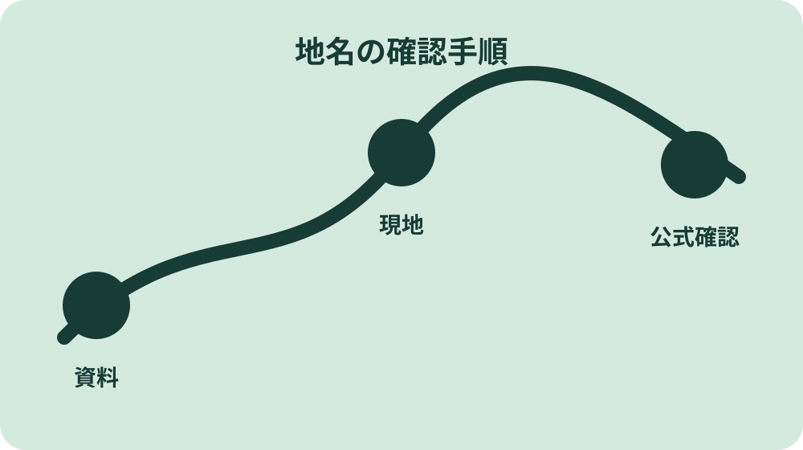
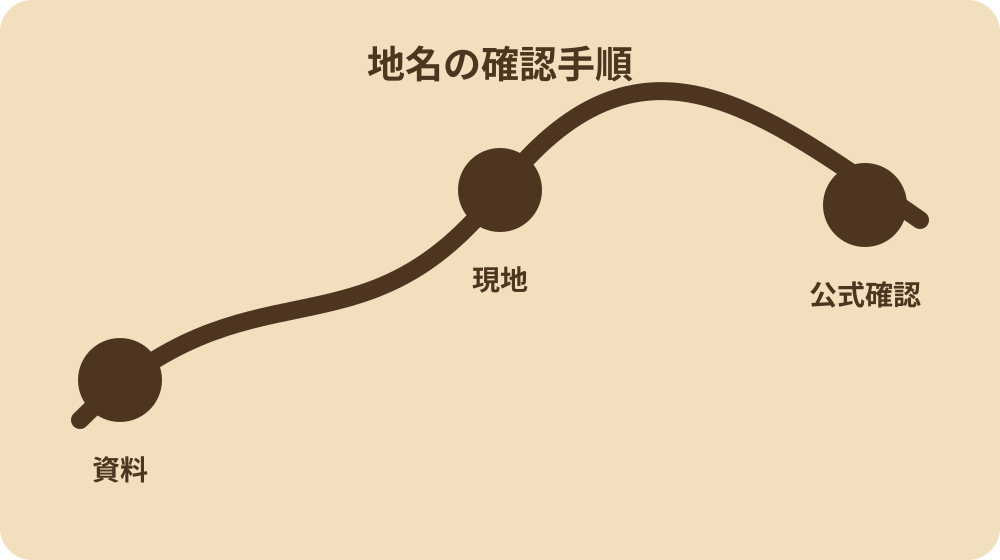
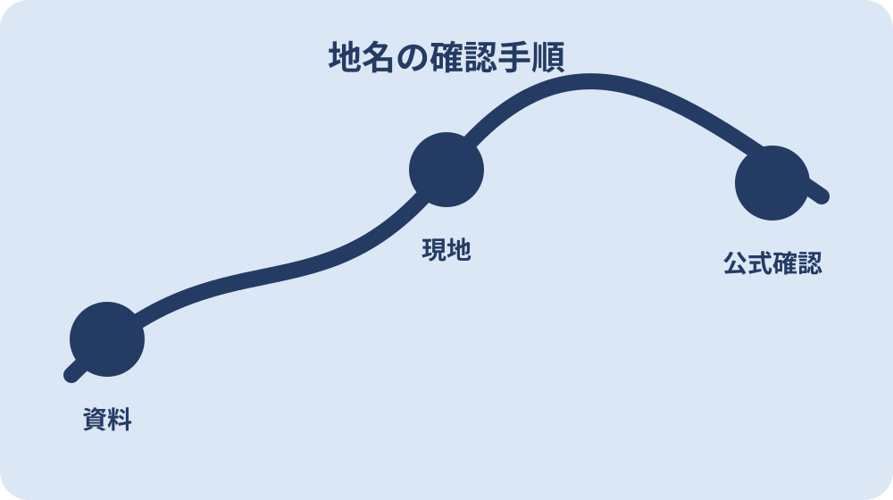

森町の地名・旧村・字を読み解く
旧村、字・大字、地名の由来を、現在の六地区との対応から確認するための確認順を、森町の地域条件に合わせてまとめました。
このページの使い方
森町の地名・旧村・字を読み解くの結論は、旧村、字・大字、地名の由来を、現在の六地区との対応から確認するという順序で調べることです。地名という言葉だけで検索結果を集めても、時点や対象が違えば同じ判断には使えません。まず自分が知りたい場所、時期、利用目的を一行で書き出します。
このガイドは地名に関係する複数の検索意図を一つの確認手順へまとめています。別ページへ細かく分けると同じ説明が重なり、更新漏れが起きやすいためです。固有の制度や施設は公式情報へ直接つなぎます。
最初のメモには「今日決めること」「後で確かめること」「担当者へ聞くこと」の三欄を作ります。古い住所は現在の住所と一対一で置き換えられるとは限りません。未確認事項を未確認のまま残すことが、誤った断定を防ぎます。
読み終えたら、公式資料を一つ開き、現地または当事者へ確認する項目を一つ選んでください。地名の理解は情報量より、次の行動が具体的になったかで確かめられます。
森町の暮らしとの関係
地名は森町の地域条件と切り離せません。天竜浜名湖鉄道や幹線道路に近い場所と山間部では、移動、災害時の代替路、管理の頻度、地域との関わり方が異なります。
地域との関係を見るときは、便利さだけでなく、日常の維持に誰が関わっているかを考えます。道路、水路、農地、祭礼、通学、見守りなどは、地図に見えにくい暮らしのつながりです。
外から訪れる人や移住を考える人は、地域を消費対象として見ないことが大切です。森町の地名・旧村・字を読み解くで得た情報を使う際も、生活者、所有者、生産者、運営者の都合と安全に配慮します。
最後に、候補地点から役場、医療、買物、避難先の動線を確認します。旧村、字・大字、地名の由来を、現在の六地区との対応から確認するという目的に戻り、必要な情報がそろったか、古い情報が混じっていないかを点検してから次へ進みます。

断定する前に確認したいこと
森町の地名・旧村・字を読み解くでは、分かりやすい一文ほど条件が省かれていないか注意します。利用できる、売れる、安全、近いといった表現には、誰が、いつ、どの地点で、どの条件なら、という前提があります。
古い住所は現在の住所と一対一で置き換えられるとは限りません。また、字名は登記、旧村名は歴史資料、地区名は生活圏の説明で使われ方が異なります。この二点は検索結果の要約だけでは判断できないため、原資料と現在の現地条件を分けて確認します。
費用を考える場合は初期費用だけでなく、交通、管理、修繕、保険、税、手続き、時間の負担も分けます。金額が不明な項目はゼロにせず、見積り待ちとして残します。
法務、税務、医療、防災など専門判断が必要な事項は、このガイドで結論を出しません。事実関係を整理した上で、所管窓口や資格を持つ専門家へ相談するための準備に使ってください。
地区・時期・家族条件で比較する
地名を比べる物差しは一つではありません。距離、所要時間、費用、頻度、季節差、家族の負担を別々の列にし、何を優先するかを先に決めます。総合点だけにすると違いの理由が見えなくなります。
地区比較では森、一宮、飯田、園田、天方、三倉を単純な順位にしません。地区内にも差があり、候補地点から日常的に使う場所までの実動線で見る必要があります。
家族条件は子どもの年齢、通勤先、通院、車の台数、将来の管理者まで含めます。今便利かだけでなく、数年後に地名との関わり方が変わったときも続けられるかを話し合います。
数字が取れない項目は、良い・悪いで埋めず「未確認」とします。未確認欄が残れば、次の現地確認や問い合わせが明確になります。比較表は結論を自動で出す道具ではなく、対話を助ける道具です。
一次資料と地図を照合する
森町の地名・旧村・字を読み解くで使う資料は、森町の公式ページ、県や国の公的資料、運営者の一次情報、現地記録の順に整理します。それぞれが答えられる範囲は違うため、同じ表へ無理に混ぜません。
地図には確認地点だけでなく、そこへ至る道路、駅、河川、標高差、周辺施設も重ねます。地名を一点として見るより、周囲とのつながりを読むほうが生活や訪問の判断に役立ちます。
資料を保存するときはURL、ページ名、確認日、該当箇所を残します。PDFならページ番号、地図なら凡例と作成年も記録します。後から更新されたときに、どこが変わったか追える形が理想です。
二つの資料が食い違う場合は、新しい方を自動的に正解とせず、対象区域と定義を確認します。聞き取り情報は公的資料と照合してから記録します。解決しない場合は担当窓口に両方の資料名を伝えて確認します。

現地で確かめるポイント
地名を現地で見る前に、確認項目を三つまでに絞ります。安全、利用条件、周辺動線を優先し、写真映えや第一印象はその後に置くと、大切な条件を見落としにくくなります。
確認日は曜日と時間帯を記録します。通勤、通学、買物、参拝、農作業などは時刻で人や車の流れが変わります。一度の訪問結果を一年中の状態として一般化しません。
写真には撮影地点と向きを添えます。ただし住宅、車両、人物、表札など個人を特定できる情報は公開しません。私有地、農地、作業場所へ無断で入らないことも地名調査の前提です。
雨天や日没後に条件が変わるテーマでは、無理にその場で確認せず、公的な防災情報や管理者の案内を使います。現地確認は資料を補う方法であり、安全を冒して行うものではありません。
地名の基本情報をそろえる
地名の基本情報は、名称、場所、対象範囲、時点、管理主体の五点です。名称が同じでも歴史資料、行政案内、日常会話で範囲が異なることがあるため、出典の表記をそのまま記録します。
場所は住所だけでなく、地区、最寄りの移動手段、周囲の地形まで確認します。森町では中心部、鉄道沿線、平地、山間部で移動や管理の条件が変わり、同じ地名でも実感が異なります。
時点はページの更新日と、情報が実際に適用される日を分けます。年度制度、季節商品、運行、指定情報などは公開日が新しくても対象期間が過去の場合があります。字名は登記、旧村名は歴史資料、地区名は生活圏の説明で使われ方が異なります
管理主体が分からないときは、森町公式サイトの担当課一覧を入口にします。民間施設や商品なら運営者、生産者、交通事業者の発信を優先し、まとめ記事だけで確定しません。

- 古い住所は現在の住所と一対一で置き換えられるとは限りません
- 字名は登記、旧村名は歴史資料、地区名は生活圏の説明で使われ方が異なります
- 聞き取り情報は公的資料と照合してから記録します
迷わない確認順序
確認順は、対象を特定し、期限と安全を見て、権利・利用条件を確かめ、費用と利便性を比べる流れです。森町の地名・旧村・字を読み解くでもこの順番を守れば、後戻りしやすい判断を先にしてしまう事態を減らせます。
問い合わせるときは地名について知りたい、とだけ伝えず、対象の場所、利用目的、希望時期、すでに確認した資料を伝えます。担当外なら次の窓口名と連絡先を聞き、たらい回しを避けます。
家族や共有者がいる場合は、資料を集める人と決定する人を分けて考えます。情報収集をした一人だけで決めず、選択肢、費用、保留事項を同じ一枚で共有してください。
決定後も確認日と根拠を残します。運行、制度、価格、指定、施設運用などは変わるため、実行直前に再確認する項目へ印を付けます。これが地名の更新漏れを防ぐ最小の仕組みです。
更新確認ノート
森町の地名・旧村・字を読み解くの情報を使った日には、参照した公式ページ、確認した地点、担当者へ聞いた内容を短く記録してください。次に地名を調べる人が同じ前提から始められ、制度や運行、地域の状況が変わったときも差分を確認できます。公開情報を引用する場合は、意味を変えず、出典名と確認日を添えます。
半年後や実行直前には、今回の結論をそのまま使わず、期限、安全、権利、費用の順に再点検します。森町の地域情報は暮らしに近いからこそ、古い案内でも検索上位に残ることがあります。旧村、字・大字、地名の由来を、現在の六地区との対応から確認するという当初の目的に照らし、現在も必要な条件だけを更新してください。
このページに統合した検索意図
次の疑問は、内容を薄く分割せず、森町の地名・旧村・字を読み解くでまとめて確認できます。
森町の地名
「森町の地名」を調べる人は、地名のうち何を決めたいのかを先に定めます。この疑問は、公式資料の時点と現地の状態を照合すると、次に聞くべきことが明確になります。このページの『旧村、字・大字、地名の由来を、現在の六地区との対応から確認する』という軸へ戻せば、別々に見える疑問も同じ資料と確認順で扱えます。
森町の旧村
「森町の旧村」を調べる人は、地名のうち何を決めたいのかを先に定めます。この検索では、名称の説明だけで終えず、対象範囲と現在の利用条件を確認します。このページの『旧村、字・大字、地名の由来を、現在の六地区との対応から確認する』という軸へ戻せば、別々に見える疑問も同じ資料と確認順で扱えます。
森町の字・大字
「森町の字・大字」を調べる人は、地名のうち何を決めたいのかを先に定めます。この疑問は、公式資料の時点と現地の状態を照合すると、次に聞くべきことが明確になります。このページの『旧村、字・大字、地名の由来を、現在の六地区との対応から確認する』という軸へ戻せば、別々に見える疑問も同じ資料と確認順で扱えます。
森町の地名の由来
「森町の地名の由来」を調べる人は、地名のうち何を決めたいのかを先に定めます。ここで必要なのは順位や断定ではなく、場所・季節・家族条件による違いを分けることです。このページの『旧村、字・大字、地名の由来を、現在の六地区との対応から確認する』という軸へ戻せば、別々に見える疑問も同じ資料と確認順で扱えます。
よくある質問
地名はこのページだけで判断できますか
このページは確認順を整える入口です。日程、制度、利用条件、個別物件など変動する事項は、掲載した公式情報と当事者へ最新状況を確認してください。
古い資料と現在の情報が違うときはどうしますか
資料の作成年、対象範囲、用語を確認し、現在の行政情報を優先します。歴史的な呼称は誤りとして消さず、時点の違いとして分けます。
現地確認で気を付けることはありますか
私有地へ入らず、交通と作業の妨げにならない場所から確認します。写真には確認日と地点を添え、公開時は個人情報を写さないようにします。
どこへ問い合わせればよいですか
ページ末の公式出典を起点に、対象地や利用目的を伝えて担当窓口を確認してください。緊急性のある事項は一般記事ではなく所管機関へ直接相談します。
関連記事
公式情報・出典
最終確認日：2026-08-09 ／ 変動する情報は公式ページと当事者へ再確認してください。